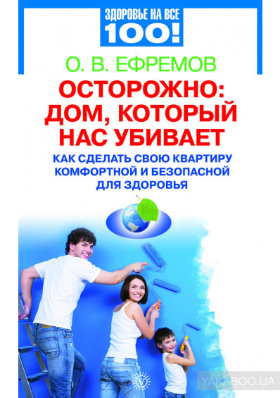

Стены: отделочные материалы.

Отделка стен — это важнейшая, если не сказать главная, часть интерьера любого помещения. Хочется, чтобы они были и заметными, и не очень; гладкими, а может, рифлеными; чтобы их цвет соответствовал внутреннему настрою хозяина и в то же время нравился посторонним и подходил к мебели. Чтобы они выглядели респектабельно и одновременно были практичными. Много задач ставим мы перед собой, выбирая убранство для стен в квартире. К счастью, ушли в прошлое времена, когда за рулоном самых примитивных обоев надо было стоять целый день в очереди. Сейчас в специализированных магазинах просто глаза разбегаются от невероятного количества разных элементов декора: обои любых расцветок, сюжетные, бессюжетные, узкие, широкие, тонкие, плотные, моющиеся, немоющиеся, под покраску, виниловые, тканевые, бумажные, велюровые. А можно купить панели, а можно самоклеющуюся пленку, а можно… Люди старшего поколения порой просто теряются, глядя на выставленные образцы. И их, проживших большую часть жизни с «ковровыми стенами», можно понять.
Но что же выбрать? Как сделать дом красивым и в то же время по возможности экологически безопасным. Да и о практичности не стоит забывать. Ведь, как мы говорили, ремонт делается на три, а то и на пять лет. И за этот срок одежда стен должна не износиться, не потерять свою свежесть и красоту.
Велюровые обоиимеют множество достоинств. Они приятны на ощупь, хорошо поглощают звуки, прекрасно «дружат» с любым освещением. При ярком свете, как солнечном, так и искусственном, их рисунок начинает «играть» новыми красками, при приглушенном — они придают комнате особую мягкость и уют. Но есть в них два существенных недостатка. Во-первых, велюровые обои обладают свойством притягивать и собирать на себя пыль. Во-вторых, они подвержены механическим воздействиям, другими словами, легко рвутся. Поэтому ухаживать за такими стенами нужно тщательно и в то же время осторожно.
Тканевые, или текстильные, обоивошли в моду недавно. А точнее: мода вернулась к ним, так как оклеивать стены тканями люди стали давно, значительно раньше, чем бумагой. Сегодня такие обои очень престижны, они довольно дорогие и сложные в работе. Наклеить их может мастер только высокой квалификации. Тканевые обои безупречны с точки зрения эстетики, и, что самое главное, они, как и бумажные, являются экологичными. Хорошо «дышат», убирают лишний шум, не выделяют в воздух вредные вещества.
В последнее время стали довольно популярными обои-пленки — виниловые, поливинил-хлоридные.Оно и понятно. Выглядят прекрасно и практически не выгорают. Кроме того, они очень удобны: им не страшна влага, они хорошо чистятся, при этом практически не истираются. И еще один очень важный момент — такие обои тоже довольно серьезное препятствие шуму. Не случайно их часто используют на кухнях, в столовых комнатах, ванной, коридоре.
Но! Следует знать, что такие обои практически не пропускают воздух. И самое главное — они изготавливаются с применением различных вредных для человека компонентов: металлических пудр, растворителей, мягчителей и т. п. Все они в большей или меньшей степени выбрасывают в воздух токсичные для человека вещества. Есть опасность подвергнуть свой организм действиям: бензола, толуола, ксилола, фенола, формальдегида и др., которые входят в состав сопутствующих растворителей, мягчителей, металлических пудр.
…
СЛЕДУЕТ ЗАПОМНИТЬ!
Толуол, ксилол, ацетон— токсичные вещества, вызывающие раздражение слизистой оболочки глаз, аллергию, повреждения кожи.
Формальдегид, фенолформальдегид— канцерогенные, токсичные органические соединения. Выделяясь, раздражают горло, бронхи, слизистую оболочку глаз, снижают иммунитет. Кроме уже названных, формальдегид содержится в смоле, используемой при изготовлении древесностружечных плит (ДСП), древесно-волокнистых плит (ДВП), фанеры, мастик, пластификаторов, шпатлевок.
Фенол— токсичное вещество. Поражает кожу, слизистые оболочки глаз, дыхательных органов, провоцирует тяжелые приступы аллергических заболеваний. у больных бронхиальной астмой может привести к удушью. Пагубно действует на почки и печень, вызывает изменение состава крови.
Бензол— простейший углеводород. В больших дозах вызывает тошноту, головокружение, головную боль. При длительном воздействии становится причиной заболеваний крови.
В состав винилового покрытия могут входить также цинк и медь, которые даже в допустимых нормах способны причинить человеку вред. Попадая в организм, они накапливаются там, так как практически не выводятся выделительными системами. Цинквызывает заболевания дыхательных путей, поражение слизистой оболочки желудка и кишечника. Медьв большом количестве может спровоцировать почечную и печеночную недостаточность, аллергические реакции. Готовые виниловые обои должны проходить несколько стадий контроля и иметь гигиеническое заключение. Только присутствие на каждом рулоне значка экологической безопасности позволяет использовать их в жилых, хорошо проветриваемых помещениях.
Сейчас модно оклеивать стены специальными обоями под покраску(на флизелиновой основе).
Красиво, потому что можно подобрать и составить любой колер, любой оттенок. Под цвет обивки мебели, ковров, внутреннего настроя.
Практично, так как эти обои, как правило, достаточно плотные. Они надежно защищают стены, не рвутся и не выделяют в воздух бумажную и синтетическую пыль, которая сама по себе является довольно активным аллергеном.
Но!Используя обои под покраску, нужно с особой тщательностью подходить к выбору самих красок, ориентируясь не только на их цвет, но и на состав. Дело в том, что химикаты, широко используемые при изготовлении красок, содержат летучие органические соединения, которые, испаряясь в воздухе, причиняют вред здоровью человека. Это уже упоминавшийся формальдегид и другие токсичные вещества.
Ни для кого не секрет, что запах «свежести», который царит в помещении после окрашивания, — это запах выделяющихся химикатов. Такой «опасный аромат» может не выветриваться несколько дней и значительно повлиять на здоровье человека. Как минимум у всех домочадцев в это время начинает болеть голова и появляются признаки отравления: тошнота, рвота, потеря аппетита. Но даже и после того, как отчетливый запах пропадет, вредные испарения способны влиять на самочувствие еще в течение полугода. Одной из составляющих многих красок является поливинилхлорид. Он разлагается при нормальной комнатной температуре и особенно под действием солнечного света. В результате этого выделяются вредные вещества, которые попадают в организм через легкие и кожу, всасываются кровью и «доставляются» в печень и почки. В лучшем случае это может вызвать аллергические реакции, в худшем — поражение печени, почек, нервной системы.
Эксперты-экологи утверждают, что число обращений за помощью в медицинские учреждения людей, пострадавших от некачественных красок, неуклонно растет.
Чрезвычайно опасны краски, в состав которых входит свинец. Раньше этот металл довольно широко применялся в лакокрасочной промышленности. Сейчас, к счастью, альтернатива есть (выпускаются натуральные силикатные водоэмульсионные, некоторые даже содержат естественный аромат цитрусовых, известково-казеиновые и другие краски). И это очень хорошо, что промышленники прислушались к протестам медиков и экологов и сократили использование свинца для бытовых нужд.
…
Свинец.Особенно опасен для беременных женщин. Он может привести к различным патологиям в течение беременности; преждевременным родам; недоразвитости плода; недостаточной массе тела новорожденного.
Очень чувствительны к токсическому действию свинца и дети. У малышей до семи лет он может вызвать: излишнюю раздражительность; необоснованные боли в животе; расстройство координации движений (атаксия); потерю сознания.
У детишек постарше наблюдается: отставание в развитии как физическом, так и психическом; снижение способностей к обучению.
Кроме того, облупившаяся свинцовая краска выбрасывает в воздух свинцовую пыль. А эта пыль вредна всем без исключения — детям, взрослым, старикам, здоровым и больным. Она действует на органы дыхания, вызывает головные боли, одышку, сильные аллергические реакции, является пусковым механизмом для развития таких заболеваний, как бронхиальная астма, аллергический ринит.
Клей. Качество клея, как ни странно, тоже может сказаться на самочувствии обитателей дома. Чем, казалось бы, может повредить клей? Используется его совсем немного, да и наносится он под обои. А оказывается, может. Потому что зачастую в синтетическом клее содержатся химические соединения, которые «посылают» в воздух вредные вещества. Наибольшую опасность представляют уже упомянутые толуол и фенол.
Панели. Декоративные панели и плиты бесспорно красивы, практичны, часто применяются дизайнерами для оформления интерьеров. Но медики предупреждают, что они могут стать миной замедленного действия. Потому что, покупая такие панели, мы практически не представляем себе, из какого материала они изготовлены. Даже такой безобидный на первый взгляд материал, как фанера в течение длительного времени способен выделять формальдегид, уже упомянутый на страницах книги бесцветный газ, обладающий ярко выраженными канцерогенными свойствами. Он влияет на здоровье кожи, легких и даже генов человека.
А если к этому добавить еще действие различных лаков и красителей, которыми покрывается декоративная фанера, то получится целый «букет» опасных летучих соединений. И они, эти соединения, будут присутствовать в доме постоянно, медленно отравляя организм.
Одним из самых распространенных материалов, используемых для декоративных панелей, является пластик. Он удобен в эксплуатации: хорошо моется, не поддается гниению, не портится от механических повреждений. Потому стеновые панели из этого материала часто применяют для оформления кухонь. Но экологи предупреждают: «много пластика в жилых помещениях — угроза здоровью обитателей этих помещений». Во-первых, потому что он обладает способностью накапливать пыль. И эту пыль надо удалять практически каждый день. Давайте спросим себя: «Часто ли мы моем стены в собственных квартирах?» На такую масштабную ежедневную уборку не хватает времени и сил даже у самой аккуратной хозяйки. Во-вторых (и это наиболее значимый довод), пластик при повышении температуры выделяет неприятные, отравляющие газы. Он токсичен в течение всего срока эксплуатации. И даже после окончания этого срока. Ученые установили, что выброшенный на свалку пластик разлагается там более 100 лет.
Широкое использование пластика означает в первую очередь серьезную опасность для органов дыхания, особенно для легких. Вреден он и для аллергиков, и для людей, имеющих проблемы с сосудами. Категорически не рекомендуются пластиковые панели в детских комнатах. Еще более рискованно украшать комнату плитками из неизвестных материалов. Какой здесь применен состав? На каком предприятии изготовлены? Есть ли гигиенический сертификат качества? Есть ли заключение медиков и экологов? Покупая в магазине приглянувшиеся изделия, люди редко задают подобные вопросы. А зря. Почему-то качество продуктов нас всех волнует, а качество предметов, окружающих нас в быту, оставляет равнодушным. Ведь ежедневно вдыхая тлетворный воздух, подставляя действию его свою кожу, мы наносим организму не меньший вред, чем употребив 1–2 раза просроченную или неполезную еду.
Как защититься?
Стены в комнате должны быть ровными и гладкими, без щелей. «Одежда» для них в идеале — плотные бумажные обои или текстильные. Такие, чтобы быстро не рвались и не ветшали. Это защитит нас от возможных вредных воздействий строительных материалов и бумажной пыли — опасного аллергена.
Клей наносите тонким слоем. И постарайтесь дня три — четыре — пока он не просохнет — не находиться в отремонтированной комнате. Тем более не рекомендуется спать в ней.
Краску покупайте только высокого качества. Выбирайте такую, чтобы в ней не было свинца. Наиболее экологической считается водоэмульсионная краска.
Используйте виниловые обои только для коридора, холла, кухни.
Требуйте гигиенический сертификат на каждое изделие.
Точно так же обязательно проверьте, есть ли сертификат, когда вы покупаете декоративные панели. Знайте: чем более натуральные материалы используются при их изготовлении, тем лучше. Самые идеальные — панели из дерева. Они экологически чистые, теплые и не менее красивые, чем искусственные. Конечно, они на порядок дороже. Но ради собственного здоровья, пожалуй, стоит и забыть о материальных выгодах.
…
Внимание!Степень экологичности отделочных материалов обозначается на упаковке следующими знаками: Е1, Е2, Е3.
• Е1 — материал идеальный, подходит даже для детских комнат;
• Е2 — пригоден для прихожей, кухни, санузла. Для спальни и гостиной лучше не брать;
• Е3 — предназначен для отделки производственных помещений. Для жилых помещений не годится.
На многих отделочных материалах есть специальные символы, обозначающие экологическую чистоту. Например, на отечественных товарах это слово: «Ecomaterial».
В гигиеническом сертификате всегда указывается, какие вредные вещества выделяются из выбранной вами краски или пластиковой панели. Если этих веществ набирается 5-10 единиц, то стоит задуматься, уместна ли такая покупка. Если продавец не может предоставить вам соответствующие материалы, подтверждающие экологическую безопасность (сертификаты, маркировку), то самый простой тест — принюхайтесь к запаху изделия. Резкий химический запах говорит о том, что данная продукция вам не подходит. Никогда не покупайте краску для внутренних работ, если на этикетке указано, что она предназначена для внешних. Это может быть очень опасно.
…
Опасайтесь подделок!Сегодня на рынке их довольно много. Покупайте товар только в солидных, проверенных магазинах.
Детская комната
Требует особых мер защиты. Здесь дизайнерская фантазия должна ограничиться только плотными бумажными обоями: с уже готовым рисунком и колером. Никаких красок и лаков, клеем тоже по возможности не злоупотреблять. Слой его должен быть тонким и аккуратным.
…
Настенные панели, если только они не из дерева, исключаются.
Чем объясняются такие меры предосторожности? Дело в том, что организм ребенка находится еще в стадии формирования и потому он более уязвим, более беззащитен перед внешней агрессией. А канцерогенные вещества, которые выделяют синтетические отделочные материалы, именно такой — и довольно сильной — агрессией являются. И при ее постоянной атаке у ребенка могут сформироваться самые различные заболевания — от тяжелых аллергических реакций до нарушений центральной и вегетативной нервной системы.
Кроме того, у ребенка еще очень незрелые органы дыхания. Путь, который проходит воздух от гортани до легких, значительно короче, чем у взрослого человека. И когда воздух насыщен ксилолом, толуолом, фенолом и другими вредными испарениями, которые выделяют синтетические материалы, то он моментально попадает в легкие, нанося непоправимый ущерб не только дыхательной системе, но и отравляя кровь, а вместе с ней и весь организм.
Специалисты советуют родителям, которые считают необходимым использовать в детской комнате декоративные панели из ДСП, ДВП или фанеры, обратить внимание, есть ли на панелях ламинирующее покрытие. Такое покрытие будет препятствовать выделению формальдегида в окружающую среду.
…
Еще один важный момент. При покупке панелей имеет смысл выбирать продукцию отечественного производства. Дело в том, что российские предельно допустимые нормы по формальдегиду в 10 раз жестче европейских.
Хорошей альтернативой изделиям из ДСП и ДВП являются плиты МДФ (от английского Medium Density Fiberboard) — древесно-волокнистая плита средней плотности. При производстве МДФ-панелей не используются вредные для человека смолы, поэтому их можно применять для отделки любых помещений, в том числе и детских комнат. Кроме того, от других отделочных материалов их отличает высокий уровень шумопоглощения, звуко— и теплоизоляции.